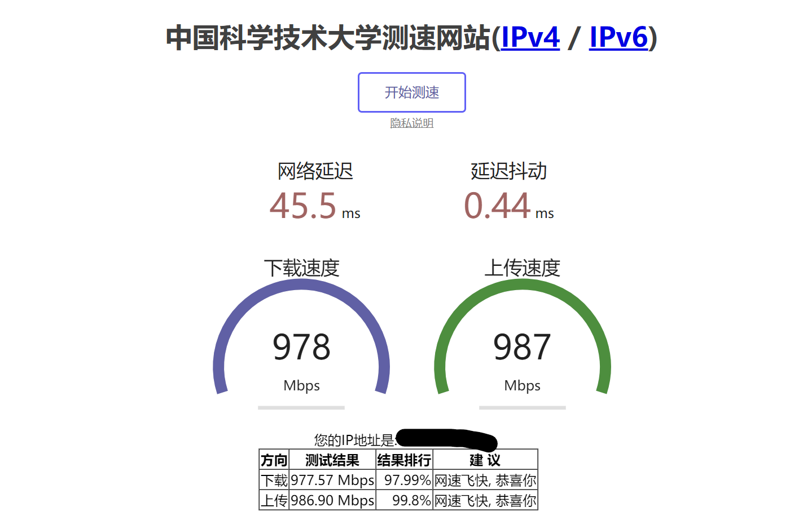

我的电脑
我的电脑是一台 ASUS ROG Strix G17 2022(G713RM)，配置如下：
CPU：AMD Ryzen 9 6900HX @3.3GHz
GPU：NVIDIA GeForce RTX 3060 Laptop GPU
RAM：32GB Samsung DDR5 BDie 5200MHz
SSD：1TB Micron 3400 PCIe4.0 NVMe SSD
WiFi：Mediatek RZ616 MT7922 802.11ax WiFi 6E
问题
它最近出现了一些问题，比如：
特定界面、程序卡顿
无法使用快速启动
S0i3 无法正常工作
掉网卡，掉 WLan
etc.
探索过程
起初我以为是系统的问题，于是我重装了系统，但是问题依旧存在，于是我开始怀疑是硬件的问题，于是我开始了一系列的测试。
首先我测试了内存。我使用了 MemTest86 进行了内存测试，测试了 4 次，没有发现任何问题。随后，因为如今(2023.Q3)的笔记本 DDR5 内存普遍都是低频的，并且 DDR5 时代的 BDie 并没有延续往日辉煌，我尝试将内存频率降低到 4800MHz，但是问题依旧存在。
随后我测试了 CPU。我使用了 Prime95 进行了 CPU 压力测试，测试了 2 次，没有发现任何问题，后来我觉得可能是 CPU 的功耗与性能的问题，于是我尝试将 CPU 的功耗限制调高，将 CPU 的 PBO 调高，但是问题依旧存在。
随后我测试了 SSD。其 S.M.A.R.T. 数据显示一切正常，但是我还是使用了 CrystalDiskMark 进行了 SSD 测试，测试了 2 次，没有发现任何问题。
随后我测试了 WiFi。其掉网卡的问题是偶发的，因为使用了最新的 WiFi 6E 技术，温度过高才导致了掉网卡，一般重启或者重置 UEFI 即可，所以我使用了 iperf3 进行了 WiFi 测试，测试了 2 次，没有发现任何问题。
随后我测试了 GPU。我使用了 FurMark 进行了 GPU 压力测试，测试了 2 次，没有发现任何问题。因为 R9 6900HX 是一颗 8 核 16 线程的 CPU，并且带有 Radeon RX680M 显卡，所以我尝试超频，以及调高功耗限制，增加可调用的 4G 内存作为显存，但是问题依旧存在。
以及其他一些测试，比如：重装系统、重置 UEFI、更新驱动、更新 BIOS、更新 Windows、更新程序…但是问题依旧存在。
之后，我开始怀疑是 Windows 11 的问题，于是我尝试了 Windows 10，但是问题依旧存在。
我将 Micron 3400 更换为了 YMTC ZhiTai PC005 PCIe3.0 NVMe SSD.
安装了 Windows 10 21H2 Enterprise LTSC.
安装了 Windows 11 22H2 Pro.
但是问题依旧存在。遂，我开始怀疑是 UEFI 的问题，于是我尝试了：
禁用 USB4 support，AMD-CBS-CBP，DRAM-Power-Downm，尝试降级 UEFI，尝试升级 UEFI，但是问题依旧存在。
因为旧的 S3 传统待机存在安全隐患，随着 Windows 11 的发布，全新的待机模式 S0i3 也被引入，所以我怀疑是 S0i3 的问题，于是我尝试了：
UEFI 中关闭 S0i3，打开 S3，这样理论上就可以解决问题，但是实际会导致电脑无法正常待机，只能强制关机。
利用 OpenCore 修改引导参数，禁用 S0i3，打开 S3，这样理论上就可以解决问题，确实解决了问题，但是会导致电脑无法正常睡眠，只能休眠，这样会导致电池耗电量过大，而且休眠后无法使用快速启动，只能使用冷启动。只能说这是一个折中的方案。
参考S3-Sleep-on-Rog-X13-G14-15-2021-2022-using-OpenCore
新发现
在我尝试了上述的所有方法后，我决定使用 Linux 进行测试，于是我尝试了：
Ubuntu 22.04 LTS
Deepin 23 Beta
这两个系统中，所有问题都不存在，这让我感到非常奇怪，于是我开始怀疑是 Windows 的问题
通过对种种迹象的分析，我有了灵感与思路，那就是：Linux 系统使用的 NVidia 驱动与 Windows 系统使用的 NVidia 驱动不同，Linux 系统使用的是开源的 Nouveau 驱动，而 Windows 系统使用的是闭源的 NVidia 驱动。并且，AMD Linux 驱动与 Linux 内核集成，其性能与稳定性都非常好，而 Windows 系统使用的是 AMD 官方的驱动，其稳定性不如 Linux。Nouveau 驱动只能提供基本的显卡功能，而 NVidia 驱动可以提供更多的显卡功能，比如：CUDA、DLSS、RTX、TensorFlow、etc.，所以我怀疑是 Windows 的显卡驱动的问题。
我获取了原厂驱动(2022的最初始版本)，所有问题都解决了。
Driver List:
AMD_Chipset_DriverOnly_ROG_AMD_J_V1.2.0.119Sub1_29512
AMD_Graphic_DriverOnly_ROG_AMD_J_V30.0.14018.19001_28641
ASUSSystemControlInterfacev3_ASUS_Z_V3.1.17.0_15273
Audio_DriverOnly_Dolby_ROG_Realtek_J_V6.0.9427.1_30931
Bluetooth_ROG_MediaTek_J_V1.932.2.294Sub1_33411
DolbyAtmosdriverforROG_V3.30307.371.1_14380_1
Graphic_DCH_ROG_NVIDIA_J_V30.0.15.1278_28613
LAN_ROG_Realtek_J_V1125.008.0515.2022_28702_1
PrecisionTouchPad_ROG_ASUS_J_V16.0.0.13Sub1_28581_1
WirelessLan_ROG_MediaTek_J_V3.03.02.0771Sub1_33414
插曲
我曾经短暂解决了问题，但是又出现了新的问题，我安装使用了 Micron 提供的最新 NVMe 驱动，而不是原厂驱动，这后来也是给我灵感的来源。
我修改了电源计划，因为近几年的华硕笔记本都安装 ARMOURY CRATE 作为电源管理软件，所以我将其卸载，使用 平衡 作为使用的电源计划，关闭硬盘的休眠(因为硬盘休眠也可能因为固件的原因导致无法启动)，利用命令行工具 powercfg 关闭混合休眠…但是问题依旧存在。
后来，我发现了一个非常奇怪的现象，那就是：利用命令行工具 DISM 命令 DISM /Online /Cleanup-iamge /Restorehealth 修复系统映像后，SFC工具 SFC /Scannow 扫描系统，问题就解决了。但是，这个问题只是暂时解决了，因为这个问题会在下一次重启再次出现，或者开启特定的程序后导致系统崩溃。
总结
之所以会出现这些问题，是因为 Windows 11 的显卡驱动的问题，而不是硬件的问题，所以我将这些问题总结为：Windows 11 的显卡驱动的问题。
之所以之前利用 命令 可以短暂解决问题，是因为这些命令会重置 Windows 11 的显卡驱动，或者将显卡驱动的某个组件替换，但是这些命令只是暂时解决了问题，因为 Windows 11 会在下一次重启或者开启特定的程序后再次加载显卡驱动，所以问题又出现了。
所以，确认使用 Windows 11 的用户，应该尽量使用原厂驱动(DCH Driver)，而不是 Windows Update 提供的驱动。
并且，即使是 OEM 提供的最新驱动，也不一定是最好的，所以，如果你的电脑出现了一些奇怪的问题，你可以尝试使用原厂驱动，或者是旧版本的驱动。
至于网卡，我只能说，Laptop Platform MediaTek 之 WiFi6E 还未成熟之前，它的发热量太大，远离它，我已经下单 Intel AX210 802.11ax WiFi 6E。
参考
新式待命與 S3
S3-Sleep-on-Rog-X13-G14-15-2021-2022-using-OpenCore
G-Helper (GHelper)
UniversalAMDFormBrowser
后续
我已经更换了 Intel AX210 802.11ax WiFi 6E 网卡，之前的问题又复现了，晕。。。所以，我按照之前的流程，一套下来，先用 AMD 提供的显卡驱动卸载工具卸载显卡驱动，DDU 卸载NVidia驱动，然后重装所有原厂驱动，重置 EFI，重做 UEFI 引导，问题解决了。
因为我的路由器是 WiFi5 标准的，所以两张网卡连接 5GHz 信号的速度都是 866 MHz，但是实测 MediaTek 网卡的速度要比 Intel 网卡的速度快(实测 mt7922 能跑 500 Mbps 左右，而 ax210 却只有 300 Mbps)，而且 MediaTek 网卡的信号强度要比 Intel 网卡的信号强度强(mt7922 能稳定 866 Mbps 接收，而 ax210 经常只有 790 Mbps 接收)，但是换都换了，就不想再换了，所以就这样吧。🙄
题外话
话说学校的网也挺快的，上传速度竟然也是 1000 Mbps。😙
(这是用 2.5Gbps 网卡 6 类网线测试的)

补充
有时候系统睡眠异常也可能是系统对设备的电源管理异常，你可以尝试打开设备管理器，找到通用串行总线控制器-USB 根集线器-电源管理，取消勾选允许计算机关闭此设备以节约电源，然后重启电脑。
也可能是系统的引导出错，可以尝试重建引导，或者是重置 UEFI。
即使这些都做过了，电脑仍然是异常的，也可能是因为一些系统策略的错误配置，你可以尝试使用组策略编辑器或者注册表编辑器进行修改。我曾经出现过系统无法关机的情况，即一直在关机界面显示转圈圈
我使用
regedit打开注册表编辑器HKEY_USERS\.DEFAULT\Control Panel\Desktop，按回车键。右键点击
Desktop，点击新建字符串值。将其命名为
AutoEndTasks,并双击打开。数值数据改为
1，点击确定。
网上说的关闭快速启动的方法，我觉得不太靠谱，因为我关闭了快速启动，但是问题依旧存在。这样做其实是在解决问题的后果，而不是解决问题的原因。是治标不治本，是饮鸩止渴的做法。
参考：[求助] 选择关机后，win11卡住，一直“正在关机”转圈圈